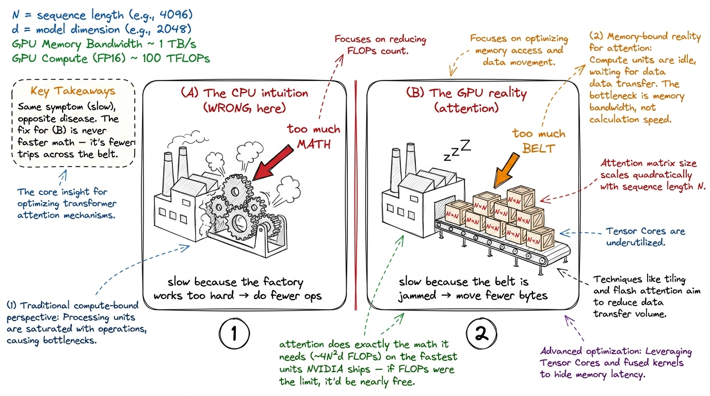
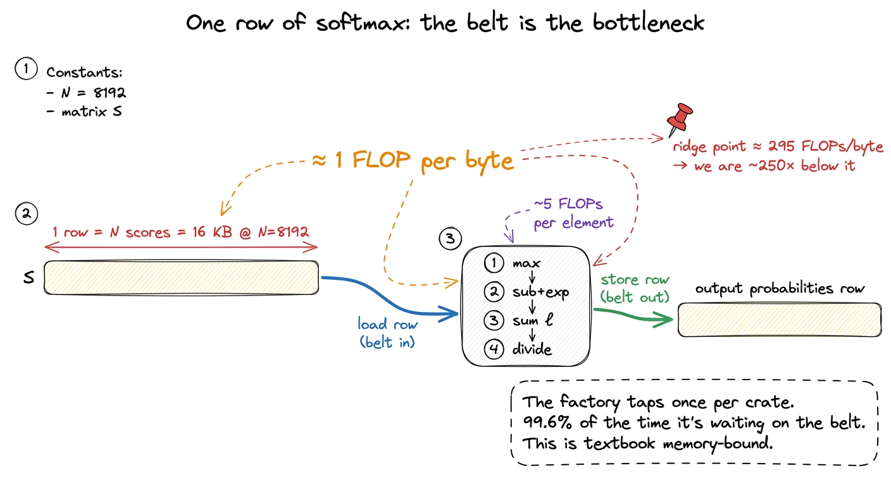
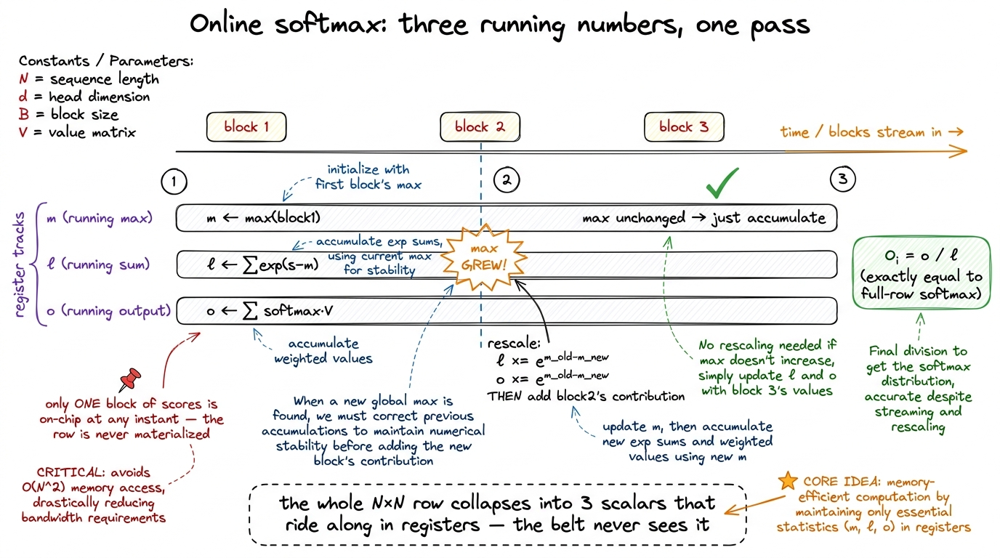
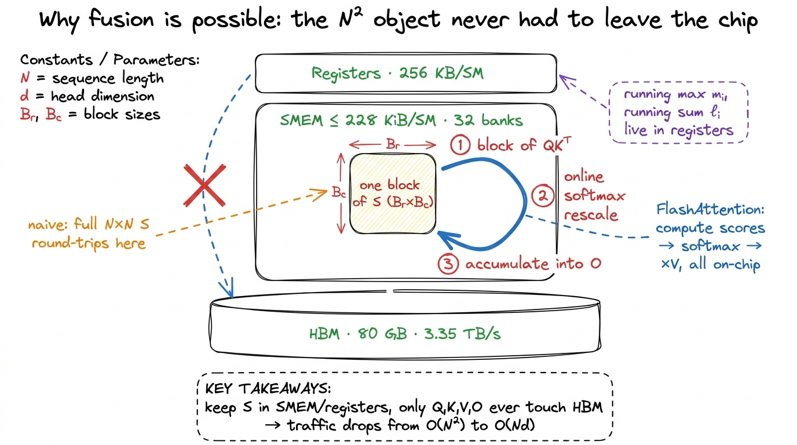

Attention, the naive way
Let me start with the smallest possible claim, and then spend the rest of this article convincing you it is true: the naive attention kernel is slow, and it is slow for a reason that has almost nothing to do with how much math it does.
That sentence should bother you a little. Slow code is usually slow because it does too much work. On a CPU, if you want a program to go faster, you find the loop that runs the most times and you make it do fewer operations. That instinct is correct for most of computing history. It is wrong here, and understanding why it is wrong is the single most important idea in modern kernel engineering — it is the idea that FlashAttention is built on, the idea vLLM's throughput depends on, the idea that decides whether a model can read a whole book or just a paragraph.
So let's build up to it slowly, from the very bottom, assuming you have never written an attention kernel in your life.
What attention actually is, from scratch
Attention is the operation that made the last decade of language models possible. Every time GPT or Claude or DeepSeek reads your prompt and figures out which earlier words matter for predicting the next one, it is running attention. And the beautiful thing is that the math is tiny.
You start with three matrices. Call them queries Q, keys K, and values V. Each has shape N × d, where N is the sequence length — how many tokens are in the context, maybe a few thousand — and d is the head dimension, a small number like 64 or 128. Think of N as "how many words" and d as "how many numbers describe each word."
Self-attention is exactly this:
# Q, K, V : (N, d)
S = (Q @ K.transpose(-2, -1)) / math.sqrt(d) # (N, N) scores
P = softmax(S, dim=-1) # (N, N) probabilities
O = P @ V # (N, d) outputRead it as three plain-English steps. First, every query dotted with every key gives a score — how much should token i pay attention to token j? That is the matrix S, and because it compares every token against every other token, it is N × N. Second, we softmax each row so the scores become probabilities that sum to one — token i now has a proper weighting over all the tokens it could look at. Third, we use those weights to take a weighted average of the value vectors, producing the output O.
Three lines. You can type them into PyTorch and they will run and be correct. And for any sequence worth caring about, they will also be embarrassingly slow.
This is the naive attention kernel of our ladder. Like the naive GEMM, its only job is to give us an honest baseline and a profile to react to. We will write it the way a framework writes it — as three separate operations — watch where the time goes, and let the profiler hand us the motivation for FlashAttention. Let's begin by asking the obvious question: what could possibly be slow about three matrix operations?
The mental model: a factory and a warehouse
Before we profile anything, I want to plant one picture in your head, and I am going to reuse it for the rest of the article. I am borrowing it from Horace He's excellent post on GPU performance, because it is the clearest way to think about this.1 Horace He, "Making Deep Learning Go Brrrr From First Principles" (horace.io/brrr_intro.html). The factory/warehouse framing and the BERT FLOP breakdown below both come from there. If you read one thing after this article, read that one.
Picture your GPU as a factory. The factory floor is where computation happens — the tensor cores, the arithmetic units, the parts that actually multiply and add numbers. This factory is astonishingly fast.
Next to the factory is a warehouse. That is your High-Bandwidth Memory (HBM) — the 80 GB of DRAM stacked next to the die on an H100. Everything your program stores lives in the warehouse: your matrices, your intermediate results, everything.
Between the factory and the warehouse runs a conveyor belt. That is your memory bandwidth — on an H100, about 3.35 TB/s. Nothing gets computed on until it has ridden the belt from the warehouse into the factory, and nothing is saved until it rides back out.
 figure rendering · The GPU is a fast factory fed by a slower conveyor belt from the wareh
figure rendering · The GPU is a fast factory fed by a slower conveyor belt from the warehHere is the whole game in one sentence: a factory that is faster than its conveyor belt spends most of its time waiting. If the belt cannot deliver raw material fast enough, the factory floor sits idle, no matter how fast it could theoretically run. So the real question about any kernel is not "how much math does it do?" It is "how many trips across the conveyor belt does it force?"
Hold onto that. Everything below is just this picture, applied to attention.
The hypothesis: chain three kernels
The obvious way to implement attention is to translate the math directly, one operation at a time. Compute the full score matrix. Softmax it. Multiply by V. Each of those is a well-understood operation we could call from a library, so why not just chain them? That is exactly what the three-line PyTorch snippet above does, and it is exactly what a framework does by default: each line becomes its own kernel — its own separate launch of the factory.
The hypothesis I want to test is the naive one a beginner would hold: three efficient kernels chained together should be efficient. Let's see where that breaks.
The trouble is hiding in the middle object. S and P are both N × N. Let's put real numbers on that, because the numbers are where the intuition lives. Take a modest sequence of N = 8192 in FP16 (2 bytes per number):
S is 8192 × 8192 × 2 bytes = 128 MiB128 MiB. For one matrix. And there is one S and one P per attention head, per layer, in the batch. A model might have 32 layers and 32 heads — you are not storing one of these, you are storing thousands of them over the course of a forward pass.
Now ask: where does a 128 MiB matrix live? It cannot fit in the factory. The fast on-chip memory on an H100 SM is at most 228 KiB of shared memory — roughly a thousand times too small. So S has no choice but to live in the warehouse, out in HBM. Which means the moment QKᵀ finishes computing S, it has to put all 128 MiB on the conveyor belt and ship it out to the warehouse. Then the softmax kernel has to ship all 128 MiB back in to work on it. Then ship its result back out. Then PV has to ship it in again.
 figure rendering · Naive attention materializes the full N×N score matrix in HBM, then re
figure rendering · Naive attention materializes the full N×N score matrix in HBM, then reThat is the picture. Three kernels, and between each pair of them, the biggest object in the whole computation makes a full round trip across the belt. Our hypothesis said three efficient kernels chain into an efficient whole. It does not, and the reason is the plumbing between the kernels, not the kernels themselves. Let's prove it with a profiler.
The measurement: the surprise is where the time isn't
Run this and point Nsight Compute at it, and here is the first surprise. The two matmuls — QKᵀ and PV — are healthy. They are real GEMMs. They have good arithmetic intensity (lots of math per byte loaded), and on an H100 they will happily push a large fraction of the 989 TFLOP/s the tensor cores can deliver.2 These two are the entire FLOP budget: QKᵀ is 2N²d FLOPs and PV is another 2N²d, so ~4N²d total. Everything else — the scale by 1/√d, the exponentials, the row sums — is a rounding error on the FLOP count. This exactly mirrors the BERT breakdown in Horace He's post: the matmuls are ~99.8% of the FLOPs, and the non-matmul ops are ~0.2% of the FLOPs — yet nowhere near 0.2% of the time.
So the matmuls are not the problem. Now look at the softmax kernel, and it lights up red. It is nowhere near compute-bound. Let's reason about why, from the factory picture.
The softmax reads N² numbers from the warehouse. For each number it does a tiny handful of arithmetic — a comparison for the running max, a subtract, one exp, one divide — and then it writes N² numbers back. That is roughly one arithmetic operation per number shipped. In factory terms: the conveyor belt drags in a huge crate, the factory does one tap with a hammer, and the belt drags the crate back out. The factory floor is idle 99% of the time, waiting on the belt.
We can make "idle" precise. From the three regimes we know the H100's ridge point is around 295 FLOPs per byte — you need to do at least that much math per byte loaded to keep the tensor cores busy. Softmax does on the order of one FLOP per byte. It is running hundreds of times below the ridge. It is hopelessly, structurally memory-bandwidth-bound. No amount of faster math would help it, because the math was never the bottleneck.
But — and this is the part people miss — the softmax kernel is only the most visible symptom. The real disease is the plumbing between all three kernels. Let's add up every trip the N × N score matrix takes across the belt.
Counting the trips across the belt
Let me count the HBM traffic for the score matrix, one crate at a time. I'll count in "units of N² elements," because that is the object that hurts.
QKᵀwritesSout to the warehouse —N²elements ride the belt out.- Softmax reads
Sback in —N²elements ride the belt in. (Often more than once: a numerically safe softmax needs the row maximum before it can exponentiate, so a naive version readsSonce to find the max and again to exponentiate. The online-free version reads it more than once.) - Softmax writes
Pback out —N²elements out. PVreadsPback in —N²elements in.
That is at least four N² trips across the HBM boundary, for a quantity the algorithm never actually needed to keep. We only ever wanted O. The score matrix S and the probability matrix P are scratch work — born in the warehouse, used once, and buried there — and yet they dominate the entire byte budget.
Now compare that to the things we do need. Q, K, and V together are 3Nd elements. The output O is Nd. Everything we actually care about is linear in N. It is only the intermediate scratch matrix that is quadratic in N. Let's see how badly that scales.
 figure rendering · For long sequences the quadratic score matrix, not the FLOPs, sets the
figure rendering · For long sequences the quadratic score matrix, not the FLOPs, sets theLet's do the ratio by hand, because it is the number that should stick with you. At N = 8192, d = 128:
- Linear traffic (the tensors we need):
~4Nd = 4 × 8192 × 128 ≈ 4.2 millionelements. - Quadratic traffic (the scratch we don't):
~4N² = 4 × 8192² ≈ 268 millionelements.
The ratio is N/d ≈ 8192/128 = 64. The scratch matrix moves roughly 64× more bytes than everything you actually asked for. And notice what dropped out: d disappeared from the quadratic term. The traffic that hurts does not care about the head dimension. It only cares about N. So as context length grows — 8k, 32k, 128k, a million — the belt gets more and more clogged with a matrix nobody wanted to keep, and the factory sits idle longer and longer.
Here is the headline, in bold because it is the whole point: on the naive three-kernel path, attention spends the majority of its wall-clock time not computing. The matmuls are efficient. They are just bracketed by a memory-bound softmax and, worse, by the mandatory HBM write-then-read of a matrix that is N² in a world where everything else is N.
Why the FLOPs are a red herring
It is worth sitting with this, because it inverts the CPU intuition we started with. Let me make the inversion completely explicit with a comparison you can hold side by side.

figure rendering · On a CPU you are usually compute-bound; naive attention is memory-bounThe naive attention kernel is not slow because it does too much math. It does exactly the math the algorithm requires — ~4N²d FLOPs — and it does that math on tensor cores that are the fastest math units NVIDIA ships. If FLOPs were the constraint, attention would be nearly free.
It is slow because of a decision buried in the structure of the implementation: the choice to materialize S and P as full tensors in the warehouse. That one choice turns a chain of on-chip-friendly operations into a sequence of HBM round-trips, and HBM round-trips are the single most expensive thing a kernel can do.3 This is the exact same lesson as operator fusion in the three regimes article. In Horace He's example, x.cos().cos() costs almost the same as a single x.cos(), even though it does twice the exp-style work — because the exponentials are basically free and the two round-trips across the belt are the entire cost. Attention is that same lesson, but at N² scale instead of N.
We paid for 80 GB of warehouse and 3.35 TB/s of conveyor belt. The naive kernel spends that expensive belt shipping a temporary matrix out to the warehouse only to immediately ship it back. It is the computational equivalent of driving a truck to the storage unit to drop off a box, then immediately driving back to pick it up, twice, before you use it.
There is a structural reason this only gets more painful over time, and it is worth knowing because it tells you this problem is not going away. Every GPU generation adds tensor-core FLOP/s faster than it adds HBM bandwidth. The factory gets upgraded faster than the conveyor belt does.4 Concretely: an A100 does 312 TFLOP/s against 1.5 TB/s of bandwidth — a ratio of ~200 FLOPs/byte. An H100 does 989 TFLOP/s against 3.35 TB/s — a ratio of ~295 FLOPs/byte. The ridge point climbed, which means the belt got relatively slower compared to the factory. A B200 pushes the ratio higher still. Memory-bound regions of a kernel get relatively more expensive on every new chip. So the ridge point keeps climbing, and any memory-bound region of a kernel keeps getting relatively more expensive on newer silicon. Naive attention is, by construction, mostly a memory-movement problem wearing a matmul-shaped hat — exactly the kind of workload that ages badly.
Zooming in on one row of softmax
I want to slow down and zoom all the way in on a single row of the softmax, because when you see the arithmetic-per-byte by hand, the whole "memory-bound" claim stops being an abstraction and becomes obvious.
Take one row of S. It has N scores in it — at N = 8192, that is 8192 numbers, or 8192 × 2 = 16,384 bytes to read. What does the softmax do to turn that row into probabilities?
1. find m = max over the row (N compares)
2. subtract m from each, exp it (N subtracts, N exps)
3. sum the exps into ℓ (N adds)
4. divide each exp by ℓ (N divides)Count it up: a few operations per element, call it ~5N FLOPs, to process a row that costs ~2N bytes to read and ~2N bytes to write. That is roughly 5N FLOPs against 4N bytes — a bit over one FLOP per byte.

figure rendering · Softmax does about one FLOP per byte, hundreds of times under the ridgOne FLOP per byte, against a ridge point of ~295 FLOPs per byte. We are running roughly 250× below the line where the factory would be busy. In factory terms: for every crate the belt drags in, the factory does one tap of a hammer and hands it back. The belt is the entire cost. That is what "memory-bound" means, made concrete on one row.
And remember — there are N rows. This whole memory-bound dance happens N times, on a matrix that had no business being in the warehouse in the first place.
What the profile tells us to do next
The profile hands us a to-do list, and it is short because the diagnosis is so clean. We are memory-bound on an N² intermediate that we never actually needed to store. Per the regime playbook, the fix for memory-bound code is never faster math — it is fewer bytes moved. And the biggest byte savings available is the most obvious one once you have seen the traffic count: never write S and P to HBM at all.
That sounds impossible at first, and it is worth being honest about why it sounds impossible, because that is exactly the confusion FlashAttention resolves. Softmax needs a whole row of S to normalize. You need the row maximum and the row sum before you can turn any single score into a probability — the denominator depends on every element in the row. And the whole reason we wrote S out to the warehouse in the first place was that a full row (plus everything else the kernel needs) does not fit in the factory's tiny on-chip memory. So computing the output without ever storing the full score matrix seems to require the row to be in two contradictory places at once: complete enough to normalize, small enough to stay on-chip.
The resolution is a genuinely beautiful trick called the online softmax. The idea: you do not need the whole row at once. You can walk across the row in small blocks, keeping just three running numbers — a running maximum m, a running sum ℓ, and a running partial output o. Each time a new block of scores arrives, you update the running max, and here is the clever part: if the max just grew, you rescale the partial output you have accumulated so far to correct for it. Because everything is relative to the running max, the answer at the end is exactly the same as if you had seen the whole row — but you never held more than one small block of scores at a time.5 The rescaling is the heart of it: when the running max jumps from m_old to m_new, every partial sum and every partial output computed under the old max is off by a factor of exp(m_old − m_new). You multiply the running sum and the running output by that factor to fix them in place. It costs a few extra FLOPs per block — and FLOPs, as we established, are free here. You are spending the cheap resource (math) to save the expensive one (belt trips). That trade is the whole art of memory-bound kernel engineering.
Let me make that concrete, because "running numbers that magically come out right" deserves to be shown, not asserted. Picture the row split into three blocks that arrive over time, left to right, and watch the three running numbers evolve as each block streams in.

figure rendering · Online softmax replaces the full score row with three running scalarsTrace it once by hand and the magic evaporates into ordinary bookkeeping. Block 1 sets the initial max, sum, and partial output. Block 2 arrives with a larger score — so before we fold it in, we multiply the old sum and old output by exp(m_old − m_new), which shrinks the old contributions to the scale of the new max, and only then add block 2's terms. Block 3's max is smaller than what we've seen, so nothing needs rescaling; we just accumulate. At the end we divide o by ℓ once, and the number that falls out is identical to what the full-row softmax would have produced — same bits, no approximation. The row of N scores was replaced by three scalars that lived in registers the entire time.6 "Bit-for-bit identical" is the ideal; in real FP16/FP32 implementations the accumulation order differs from the naive path, so you can see last-bit rounding differences. This is expected and harmless — it is the same kind of reordering tolerance you accept in any blocked GEMM, not a correctness bug.
Combine online softmax with tiling Q, K, and V into shared memory, and the three kernels fuse into one. A single kernel loads a block of Q and a block of K into the factory's on-chip memory, computes that block of scores right there, softmaxes it online, multiplies by the matching block of V, and accumulates into the output — and then throws the score block away. No N² object ever rides the conveyor belt to the warehouse. The scratch matrix stays entirely inside the factory, where it belongs.

figure rendering · FlashAttention keeps every N×N quantity on-chip; only the linear-sizedLook at what that does to our traffic count. Before, the belt carried ~4N² elements of scratch. After fusion, the belt carries only Q, K, V, and O — ~4Nd elements, linear in N. We just cut the term that was 64× larger and made the whole kernel scale with the tensors we actually wanted. The FLOPs did not change at all — we still do exactly ~4N²d of them. We only changed how many trips across the belt they cost. That is FlashAttention, and it is the whole reason attention is tractable at long context today — it is what lets vLLM serve 128k-token contexts and lets DeepSeek train on sequences that would have drowned the warehouse a few years ago.7 FlashAttention does not achieve zero HBM traffic — it still has to read Q, K, V and write O, and for very long sequences it re-reads K and V blocks across the outer loop. The point is not "no traffic," it is "traffic that scales as Nd instead of N²." That is the difference between a kernel that gets worse quadratically with context length and one that gets worse only linearly. In practice FlashAttention reports several-fold end-to-end speedups on long sequences, and the gap widens as N grows.
Where we landed
Let's zoom back out to the factory one last time. We started with a beginner's hypothesis — three efficient kernels should chain into an efficient whole — and the profiler demolished it. Not because any kernel was doing bad math, but because between the kernels we forced the biggest object in the computation to make four round trips across a conveyor belt that is the most expensive resource we own. The math was always fine. The bytes were the bill.
The naive version we just wrote is the baseline that FlashAttention beats, and now we know precisely which number it has to move. Not the FLOPs — those were already efficient, running near the tensor cores' peak. The N² bytes we should never have written down in the first place. We will build FlashAttention in the next section the same way we build everything here: state the hypothesis, write the smallest kernel that tests it, profile it, and let the measurement — not the math — tell us we won.
And when you get there, keep the factory in your head. The trick that makes it work is not a faster factory. It is refusing to send the scratch out to the warehouse — spending a few free FLOPs on the online-softmax rescale so the belt never has to carry the one crate that was clogging it. That is the whole art, in one sentence, and it is the sentence I promised you at the very top: attention is slow for a reason that has almost nothing to do with how much math it does.